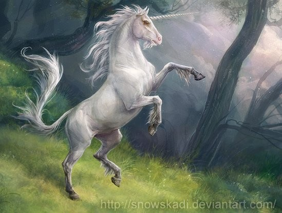

Британский Единорог

Окрас: | Британские единороги обычно чисто белые |
|---|---|
| Рог: | Рог Британских единорогов весьма невелик, по сравнению с крупным телом. Он обладает свойством обезвреживать любые, даже самые сильные яды. |
Маленькая история: | Волосы из гривы и хвоста используются для придания особенных свойств магическим вещам (например, волшебным палочкам). Эти волосы как молоко и кровь используются приготовлении зелий. Известно, что когда Единорог кого-то жалеет, его магические силы умножаются, так его слезы способны залечивать раны и восстанавливать первичный облик заколдованных людей или существ. Эти существа чувствуют опасность и неискренность. |